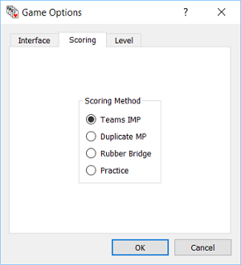

Game
Options.
Interface.
Here you can choose if you want a pause between
bids and/or you want a
pause between plays. And you choose how many seconds there should be
between bids/plays.
Scoring.

The Scoring dialog allows you to choose the mode of
the bridge play when you play with cards dealt by the computer i.e. not
from a PBN file. When cards are dealt from a PBN file the scoring mode
is given in the file.
- Teams IMP.
You play the cards with the computer in one play and the computer plays
the cards in another play (simultaneously). The two plays are then
given scores and
compared with International Match Point (IM).
- Duplicate MP.
Is the same as Teams IMP except the comparison are with Match Point
(MP).
- Rubber Bridge.
A rubber bridge play can be played.
- Practice.
You just play the cards given. Scores are calculated, but no comparison
is done.